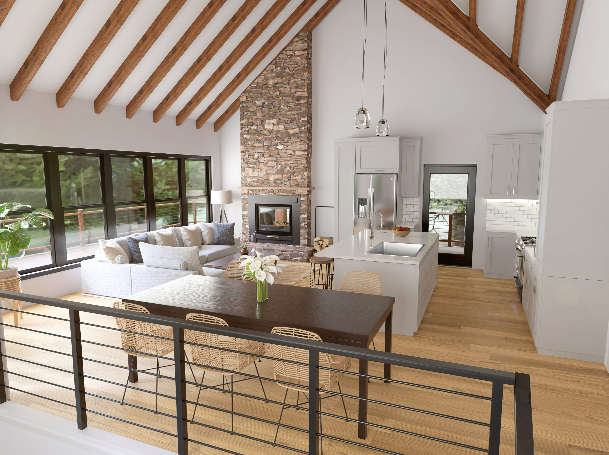
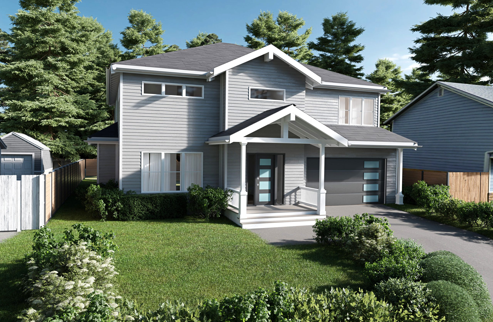
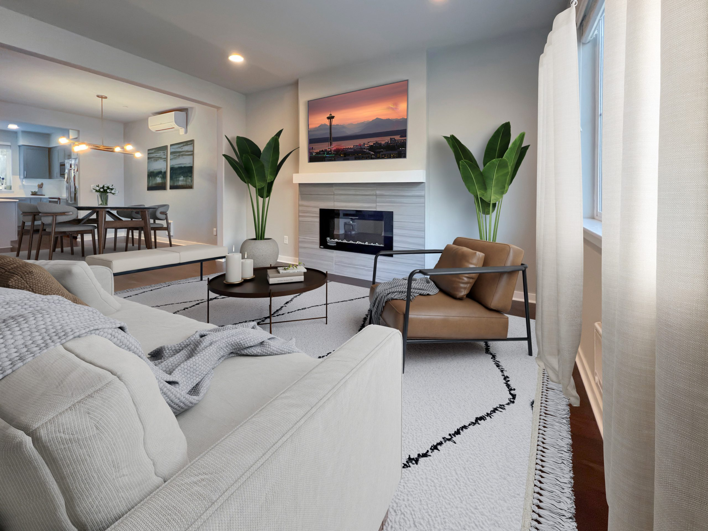
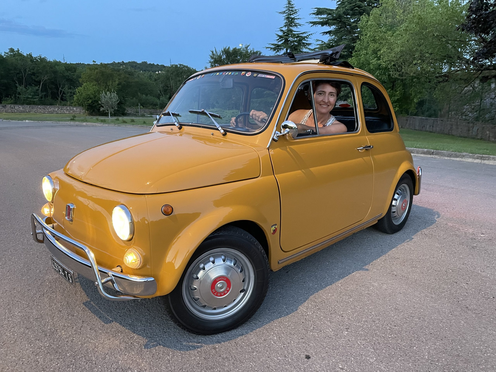

Interior Renders
Bring interior design choices to life with realistic and detailed layouts, materials, and furnishings. Maximize functionality and flow with efficient interior layouts.
3D visualization & interior design
Immersive 3D renders, staging & animations for homes & real estate.
Get StartedNew Interior Solutions
We are a team of 3D artists and designers committed to helping our clients succeed in their business. We strive to find the best solution to their interior design or real estate problems.
Confirm furniture placement, finishes, and color schemes work cohesively before implementation.
01 / What we do
Bring interior design choices to life with realistic and detailed layouts, materials, and furnishings. Maximize functionality and flow with efficient interior layouts.
Showcase the new building along with its landscaping and neighborhood. Visualize, adjust, and perfect the ideal color palette for your space.
We will use your blueprints to generate 3D building animations, videos, flyovers and interactive virtual tours.
Transform empty spaces into beautifully staged interiors. Showcase fully furnished spaces without the expense of physical staging, saving time and money while still impressing buyers.
02 / A closer look

We selected materials that embodied the wooden nature of the cabin, using a neutral color palette to make the wooden accents pop. The furniture was placed in a way to open the space even more.

We created 3D models of the surrounding houses based on photos and added them to our renders, showing exactly how the new home would look on the street.
We created an animation showing the building going up step by step, with pauses to highlight interior features. This made a complex process easy to understand.

We positioned the furniture while keeping in mind the layout and flow of the house. We made sure to coordinate the colors and the accessories within the rooms.

03 / The person behind the spaces
Interior Designer / Owner
If I had to describe myself in a few words I would say that I'm an Italian attracted to innovation, jeans and sneakers, self-improvement, pizza every weekend and to the fantastic old Fiat 500 (yes, I even have a painting of an old Fiat 500 hanging in my living room).
However, my true passion is, of course, interior design and more specifically spatial problem-solving.
I think I got my ability to make the most of a space from my parents who have always tried to find creative and practical ways to maximize every single centimeter of our small Italian condo (800 sq ft for four, tall people) and from the fact that I have lived in Italy half of my life, where everything is smaller. I mean, seriously, even the pizza is smaller!
There you go. This is me.
04 / Experience & approach
Founded Creating Interiors in 2006, specializing in traditional home staging and design services. Launched New Interior Solutions in 2019, transitioning from physical to digital design innovations.
Blending 3D tech, interior design, and staging strategy. Each project is carefully reviewed before delivery.
Unique Italian design and select Italian furniture to make your project stand out.
05 / In our clients’ words
I was really struggling to figure out how to remodel my kitchen, but Francesca quickly put me at ease.
The ability to digitally showcase our new construction project with her product has become an invaluable tool for our business. Well done!
Francesca was able to lay out the project in 3D, provide a virtual tour, and make changes in the design before we started construction, saving us time and money.